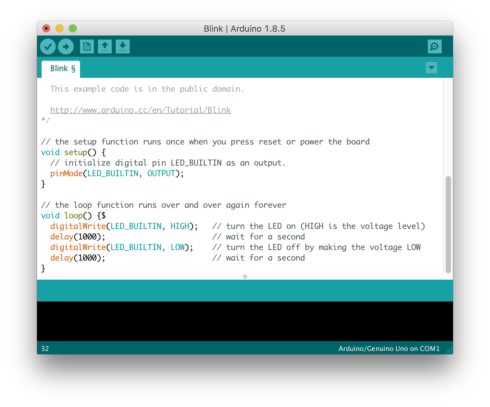

Inleiding tot Arduino
Arduino is een open source platform dat wordt gebruikt voor het bouwen van elektronicaprojecten. Arduino bestaat uit zowel een fysiek programmeerbare printplaat (vaak microcontroller genoemd) en een stukje software, of IDE (Integrated Development Environment) dat op je computer staat en wordt gebruikt om programmas te schrijven en te uploaden naar het fysieke bord. Arduino's zijn ontworpen voor kunstenaars, ontwerpers, hobbyisten, hackers, nieuwelingen en iedereen die geïnteresseerd is in het maken van interactieve objecten of omgevingen. Arduino kan communiceren met knoppen, LED's, motoren, luidsprekers, GPS-eenheden, camera's, internet en zelfs je smartphone of je tv! Deze flexibiliteit in combinatie met het feit dat de Arduino-software gratis is, de hardwarekaarten vrij goedkoop zijn en zowel de software als de hardware gemakkelijk te leren zijn, heeft geleid tot een grote gemeenschap van gebruikers die code hebben bijgedragen en instructies hebben vrijgegeven voor een grote verscheidenheid aan Arduino-gebaseerde projecten.
Waaruit bestaat een Arduino?
Er zijn veel soorten Arduino-kaarten die voor verschillende doeleinden kunnen worden gebruikt. Elk specifiek bord heeft zijn verschillen, maar de meeste Arduino's hebben de meeste van deze componenten gemeen:
- Pinnen
- stroompoort
- reset knop
- aan/uit-LED-indicator:
- TX RX-leds
- Hoofd-IC
Hoe kan ik een Arduino programmeren?
De Arduino Integrated Development Environment (IDE) is het belangrijkste tekstbewerkingsprogramma dat wordt gebruikt voor Arduino-programmering (de afbeelding onder deze tekst). Hier typt u uw code voordat u deze uploadt naar het bord dat u wilt programmeren. Arduino-code wordt schetsen genoemd. De taal die wordt gebruikt voor het programmeren van arduino's is c++, en terwijl je verschillende componenten gebruikt, kun je verschillende bibliotheken gebruiken om de volledige functionaliteit van de IDE te krijgen.
